Le bonheur
L'abeille
« Fais ton propre miel ! » Comme l'abeille, tu as tout ce qu'il faut pour fabriquer ton or.
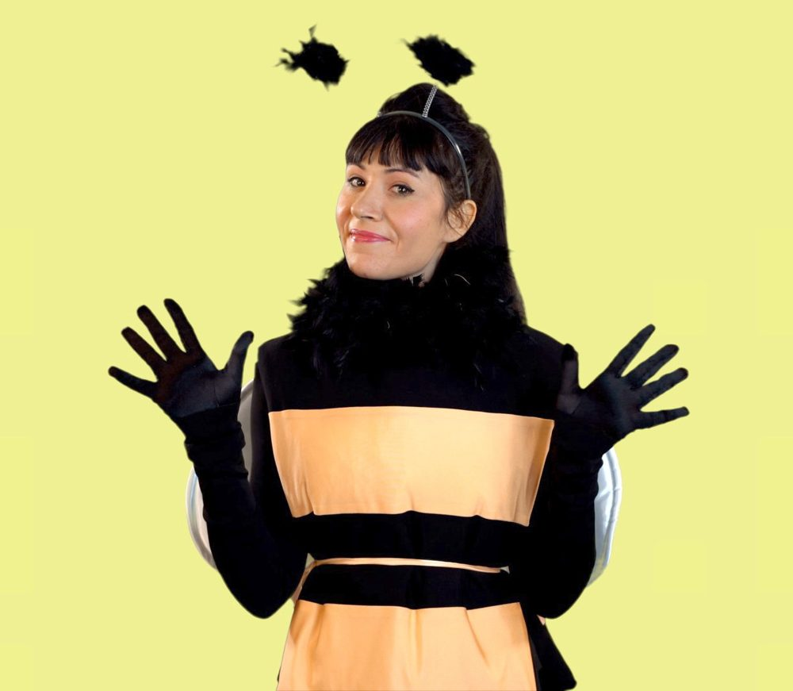
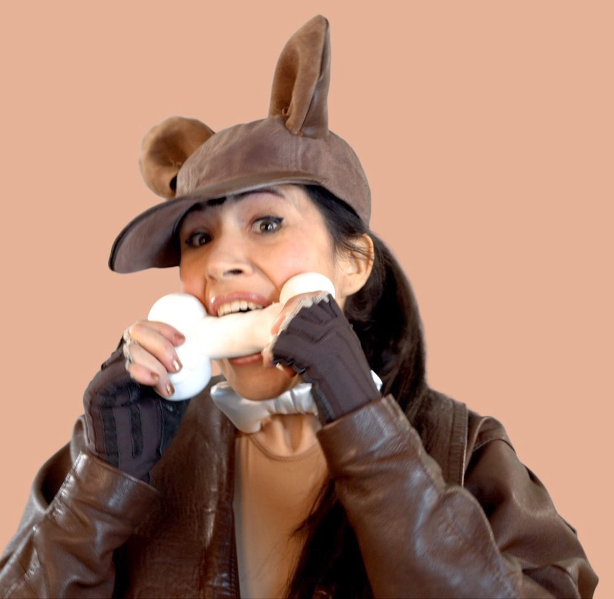
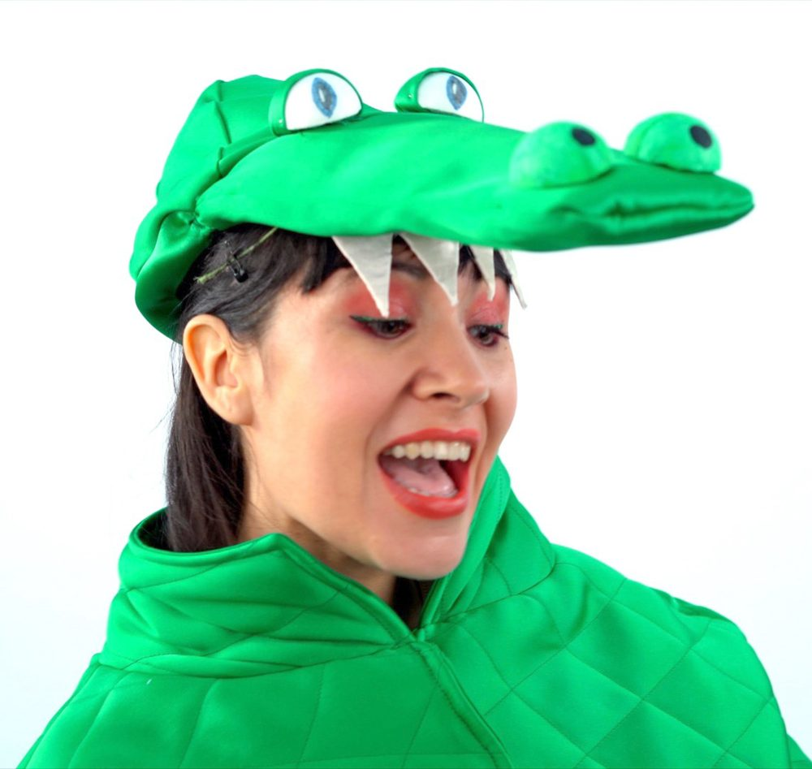
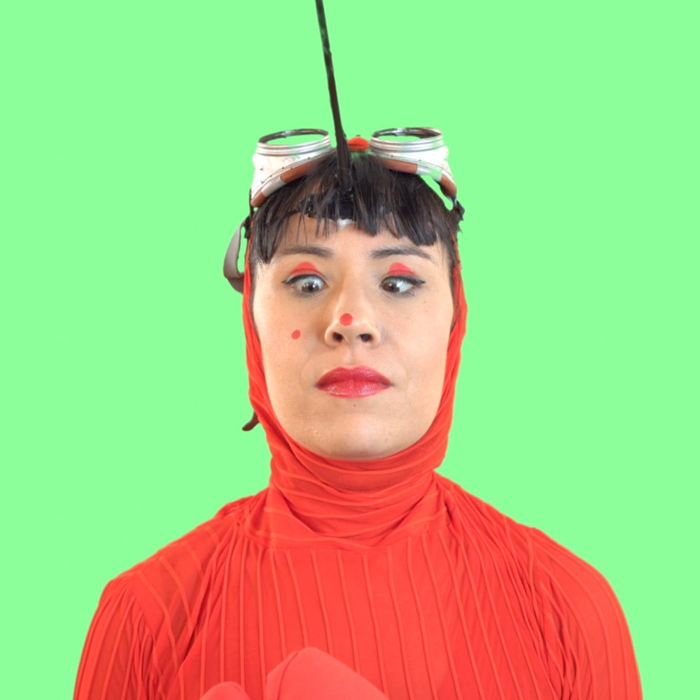
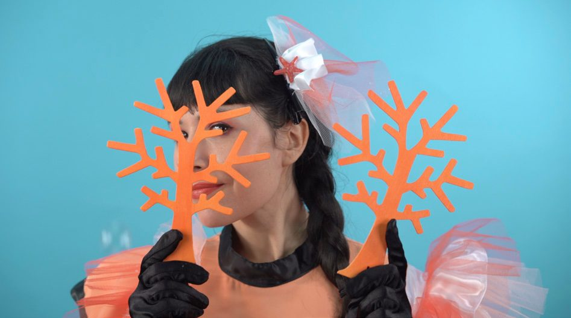
Lise for Kids · Concert jeune public
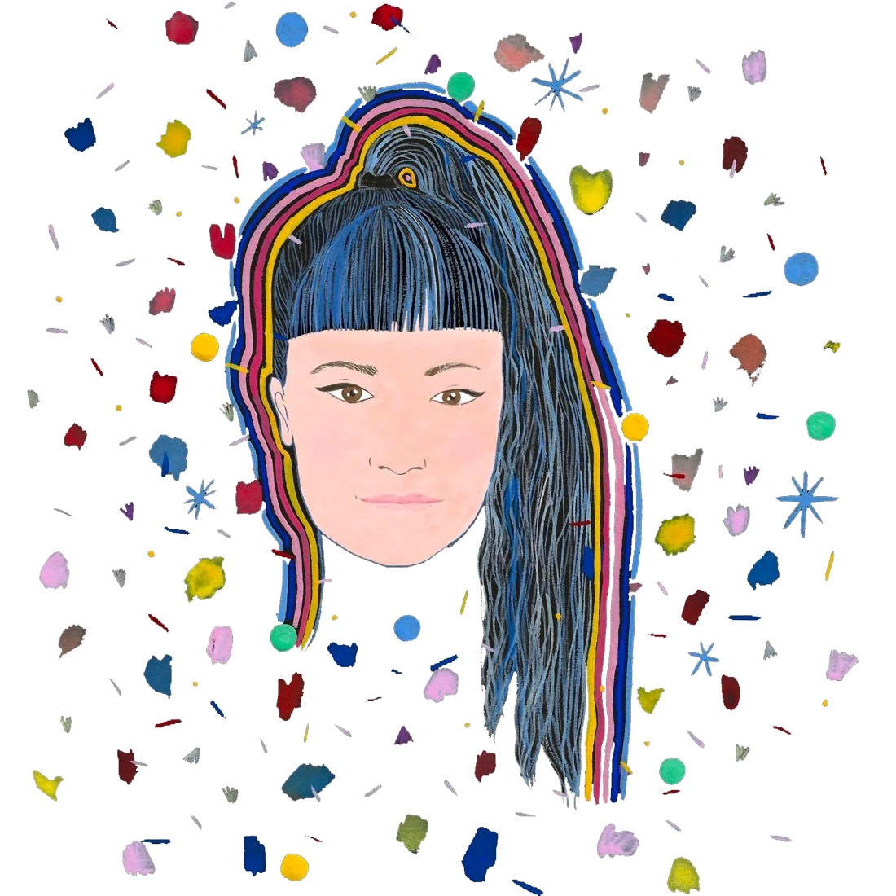
Un concert électro-pop comme pour les grands, mais pour les petits !
Le spectacle
Une abeille qui fabrique son propre bonheur, des chiens des rues qui croquent les problèmes comme des os, un crocodile ami pour la vie, une petite moustique qui cultive sa différence…
Seule en scène, en costume et entourée de ses claviers, Lise fait vivre une galerie d'animaux rigolos. Chacun porte une petite fable en chanson, écrite et composée par Lise, puis réalisée par Martin Solveig, figure de la French Touch.
Derrière elle, l'écran projette ses vidéos pop : des repères pour rassurer les plus petits, des pas de danse à reproduire, des indices pour entrer dans l'histoire. Chaque tableau a sa couleur, ses costumes faits main et sa pluie de confettis.
« Dans les concerts pop, le public est absolument créateur. Il peut faire ou défaire un concert. Les enfants savent mieux que quiconque s'emparer de la magie de l'instant. »
Lise for KidsSouvent le tout premier concert des enfants, c'est un moment de liberté qui commence quand les lumières s'éteignent dans la salle et s'allument sur la scène, de toutes les couleurs.
En images

Le teaser · l'univers du spectacle

Teaser live · en concert devant les enfants
Le déroulé
Le spectacle est construit en tableaux, chacun avec sa couleur, comme les costumes : on change d'animal, d'univers sonore et de lumière à chaque chanson.
« Fais ton propre miel ! » Comme l'abeille, tu as tout ce qu'il faut pour fabriquer ton or.
« No problemos, on mange les os ! » Des chiens des rues, un saxophone, et Martin Solveig aux chœurs.
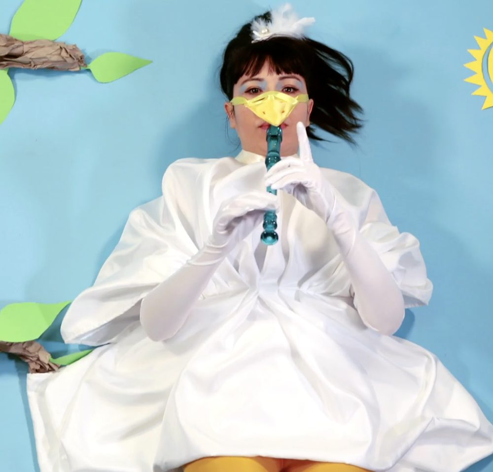
« Envole-toi, la Terre est ronde, tu es déjà tout au bout du monde. »
« Rien n'est mieux dans la vie qu'un nouvel ami ! » Quand on a un ami, c'est pour la vie.
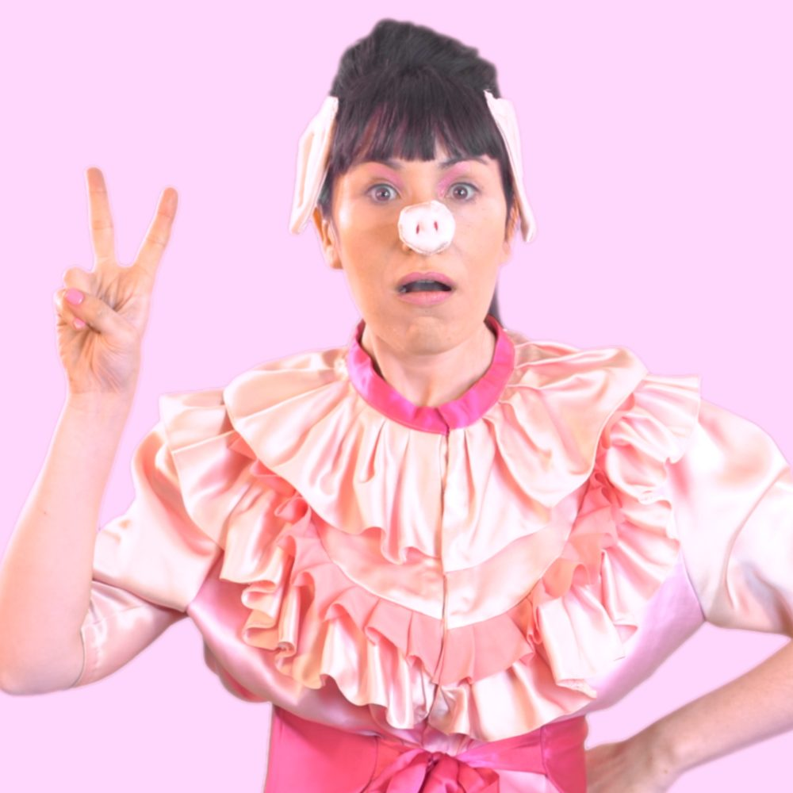
Vocodeur façon Daft Punk, guitares funk et cloches du vieux synthé Alesis.
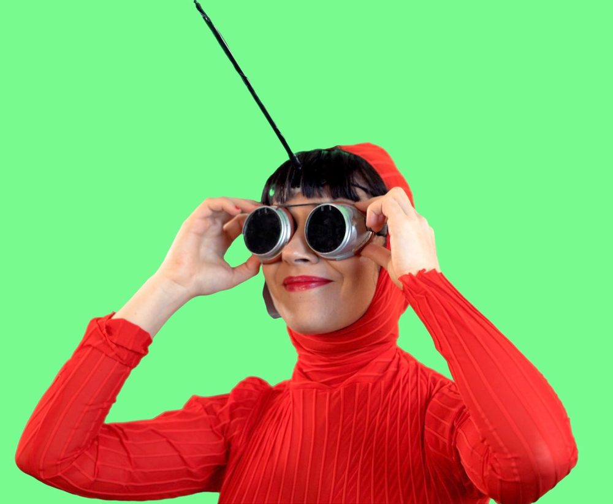
« Chacun son style, chacun sa touche ! » On est tous uniques : cultivons nos différences.
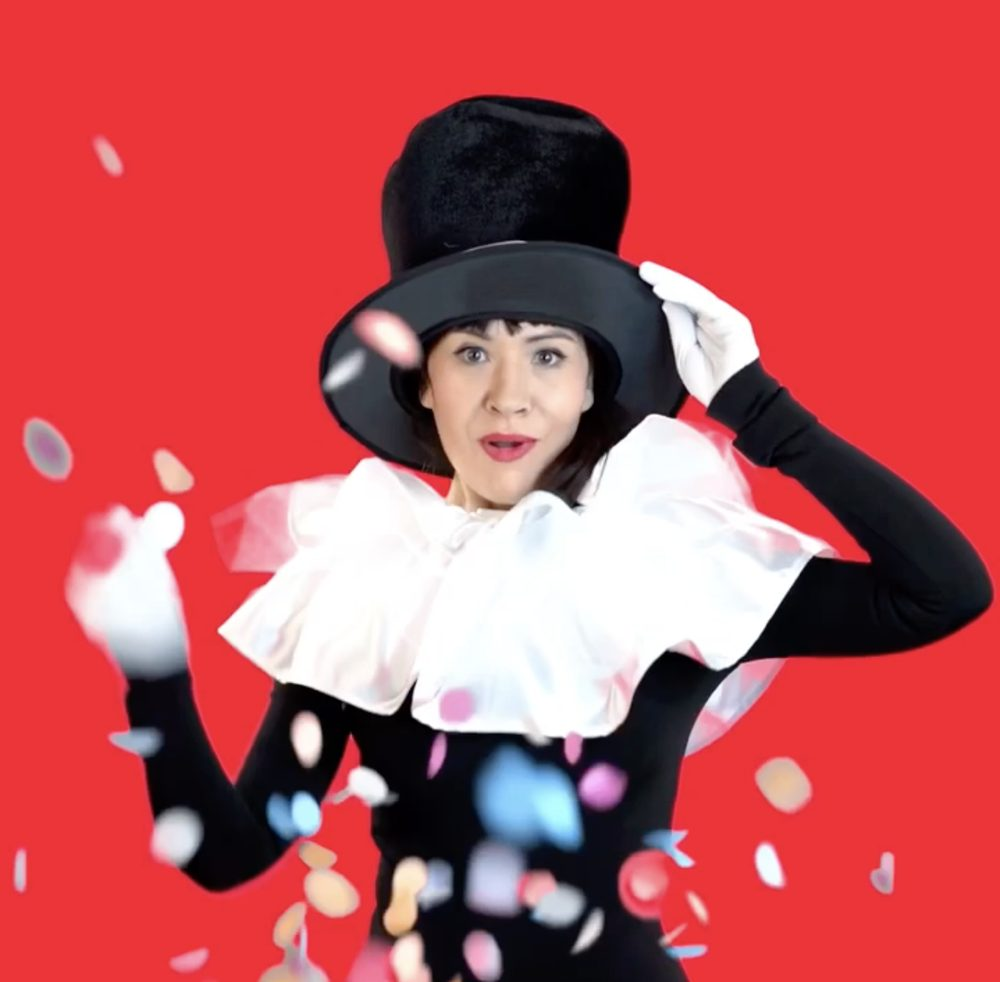
« La vie est une magicienne, elle sort tout de son chapeau. »
« Peu importe où nous allons, dans l'océan immense nous rentrons tous à la maison. »
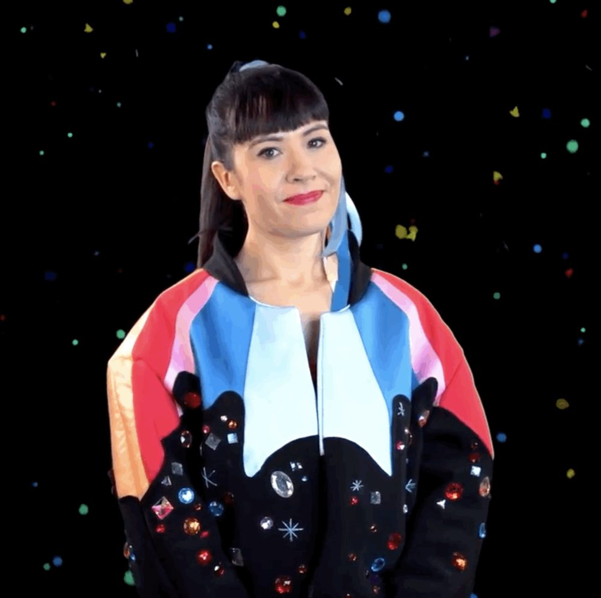
Tous les animaux reviennent pour une grande fête dansée !
L'album
Les chansons du spectacle, arrangées avec Yassine Rehaim et réalisées par Martin Solveig, sont parues sur l'application jeunesse Alma Studio.
Toutes les chansons de Lise for Kids :
La musique
Lise a écrit ces petites fables à Brooklyn, avec pour seul instrument un synthétiseur vintage Alesis QS6, qu'on entend encore dans les versions finales. Elle les a jouées sur scène de nombreuses fois avant qu'elles ne tombent dans les oreilles de Martin Solveig.
Il les a mêlées à ses influences électroniques, de Daft Punk à Sébastien Tellier en passant par Danny Elfman. Les chansons ont été enregistrées en avril 2020 au studio Question de Son, à Paris.
Pianiste de formation classique, Lise compose des mélodies luxuriantes et décomplexées : on reconnaît Chopin dans l'abeille, Bach dans le hibou. On y entend aussi la belle lignée des femmes au piano, de Barbara et Véronique Sanson à Tori Amos et Regina Spektor, avec Björk comme boussole.
Les chiens : une rythmique construite avec des bruits de rue et un riff de saxophone, l'instrument des fanfares et du dehors.
Les cochons : le vocodeur du Microkorg, poussé vers Daft Punk, avec des guitares funk.
L'univers visuel
Illustrations · Sophie Truant
Artiste plasticienne diplômée des Beaux-Arts de Paris, Sophie Truant dessine au Rotring un trait fin et délicat, rehaussé de touches de couleur. Le portrait de Lise et ses confettis viennent d'elle.
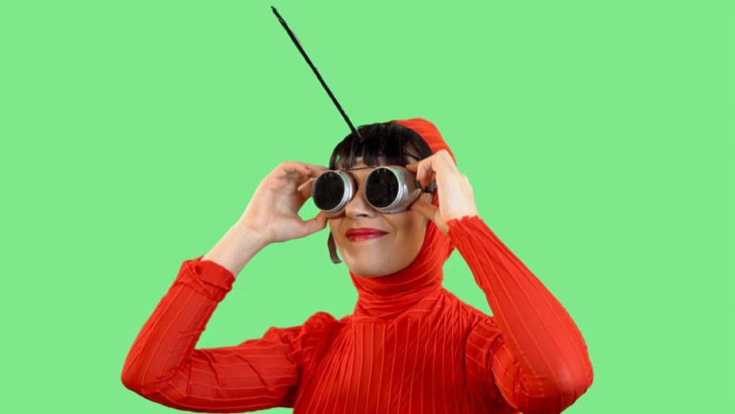
Vidéos · My Single Lise
Depuis 2018, Lise se met en scène dans de courtes vidéos pop et minimales. Projetées pendant le concert, elles guident les enfants (pas de danse, applaudissements) et reprennent les codes du gif et du clip de paroles.
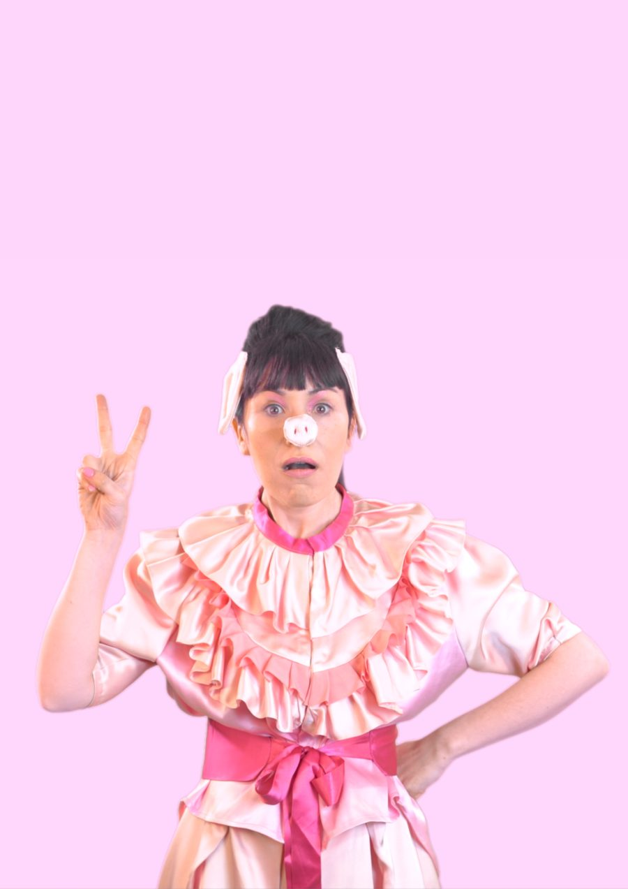
Costumes · Virginie Riou
Faits main dans des chutes de tissus de haute couture, aux couleurs vives, avec une couleur par tableau, comme le décor. « Une panoplie arc-en-ciel pour développer l'imagination des enfants tout en s'amusant. »
Scolaires et familles
Chaque chanson porte une petite leçon de vie. Un dossier pédagogique et un livret de philo illustré accompagnent le spectacle, pour préparer la venue des enfants et prolonger le concert en classe ou à la maison.
D'Ésope à La Fontaine, l'animal parle aux enfants. Une occasion de découvrir les espèces, leurs cris, leurs habitats et la pollinisation.
Des ateliers d'échange ludiques, avec un moment de relaxation pour se rendre disponible à la réflexion.
Mobiliser le langage, agir et s'exprimer à travers l'activité physique et les activités artistiques, explorer le monde du vivant.
Un livret illustré, avec des questions, des jeux et même la recette des os en meringue !
Deux playlists à partager avec les enseignants et les familles, avant ou après le concert.
Apprendre les chorés · pour danser avec Lise le jour du concert
Les leçons de philo · en vidéo, animal par animal
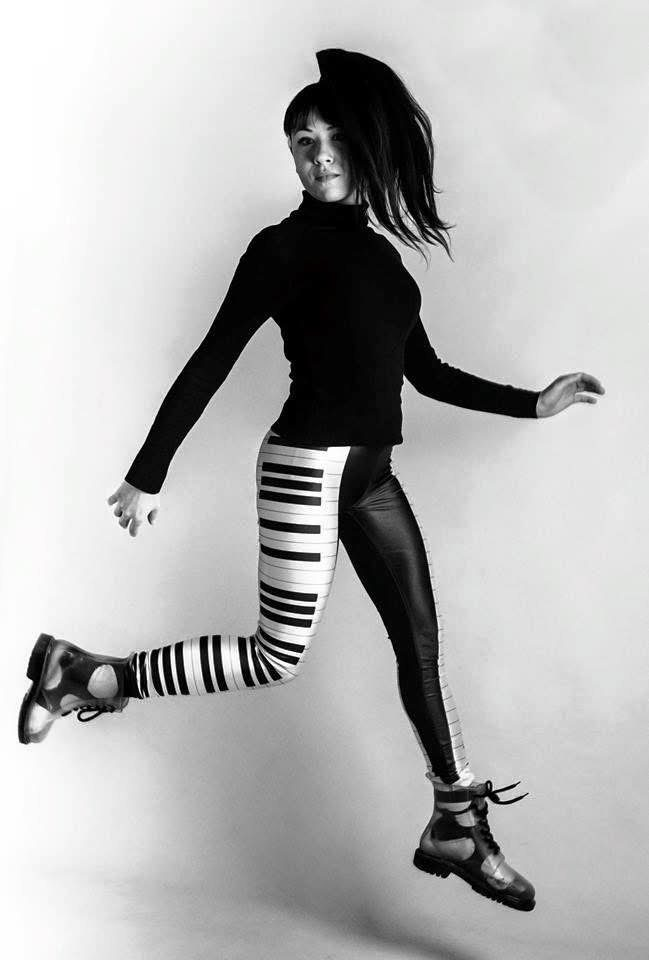
L'artiste
Pianiste · Compositrice · Chanteuse
Artiste pluridisciplinaire formée au piano classique (CNR Perpignan), à la MAO (Studio des Variétés) et à la scène (Chantier des Francos), Lise développe depuis plus de dix ans un travail musical sensible à destination du jeune public. Elle compose pour la chanson, le cinéma, le spectacle vivant et la création sonore.
Elle a collaboré avec Dionysos, Martin Solveig, Mathias Malzieu, Dominique A, Jil Caplan et Cali, et a écrit pour Zaz. C'est grâce à sa fille de trois ans, fan de La petite abeille, que Martin Solveig a découvert Lise : il l'a d'abord invitée aux claviers pour un concert à l'Olympia, puis lui a proposé de produire ses chansons.
Jeune public
Et si j'étais : ciné-chanson, Forum des Images / Ciné Junior (tournée 2016–2019)
Lise et les animaux rigolos : concert électro-pop, album réalisé par Martin Solveig (2020, tournée depuis 2021)
Pitch et Maïco et Doria, la petite sorcière presque super : séries audio Alma Studio (2022–2024, plus de 50 épisodes)
Chœur d'oiseaux : ciné-concert, Festival Tout-Petits Cinéma, Forum des Images (2025, en tournée)
Ton prénom en chanson : album de plus de cinquante comptines
Forum des Images · Les Francofolies · Printemps de Bourges · ADAMI · Les Inrockuptibles · Gommette Production · Alliances Françaises · Alma Studio
Fiche technique
Lise vient sans technicien : deux personnes sont nécessaires sur place, une au son et à la vidéo, une à la lumière. Un fichier vidéo/son (MPEG-4, 1920×1080) est envoyé en amont ; son bon fonctionnement doit être vérifié avant l'arrivée de l'artiste.
L'espace scénique doit être complètement dégagé et nettoyé, avec l'écran en fond de scène. La cage de scène et la salle doivent être les plus sombres possible.
Lise vient avec ses instruments et un micro DPA 4066 en liaison HF Sennheiser. À prévoir :
| 1. Intro | Noir |
| 2. Imagination | Après la lecture du titre à l'écran, allumer la face |
| 3. L'abeille | Après les confettis, contre en jaune |
| 4. Les chiens | Après les confettis, contre en blanc chaud · machine à fumée si possible |
| 5. L'oiseau | Après les confettis, contre en bleu ciel · noir à la fin, sur la sortie de scène |
| 6. Croco | Au début du morceau, contre en vert + face |
| 7. Les cochons | Après les confettis, contre en rose |
| 8. La moustique | Après les confettis, contre en vert clair |
| 9. La puce | Après les confettis, contre rouge |
| 10. Le poisson | Après les confettis, contre en bleu profond ; allumer un peu la salle, Lise joue des mélodies dans le public · machine à bulles si possible |
| 11. Ta maman | Chase ou strob avec les couleurs des autres tableaux (fiesta !) |
| # | Source | Emplacement |
|---|---|---|
| 1 | Vidéo L | Régie |
| 2 | Vidéo R | Régie |
| 3 | Keytar | DI / scène |
| 4 | Voix Lise | HF fourni · pour le mix |
| 5 | Y Lise | Pour les retours |
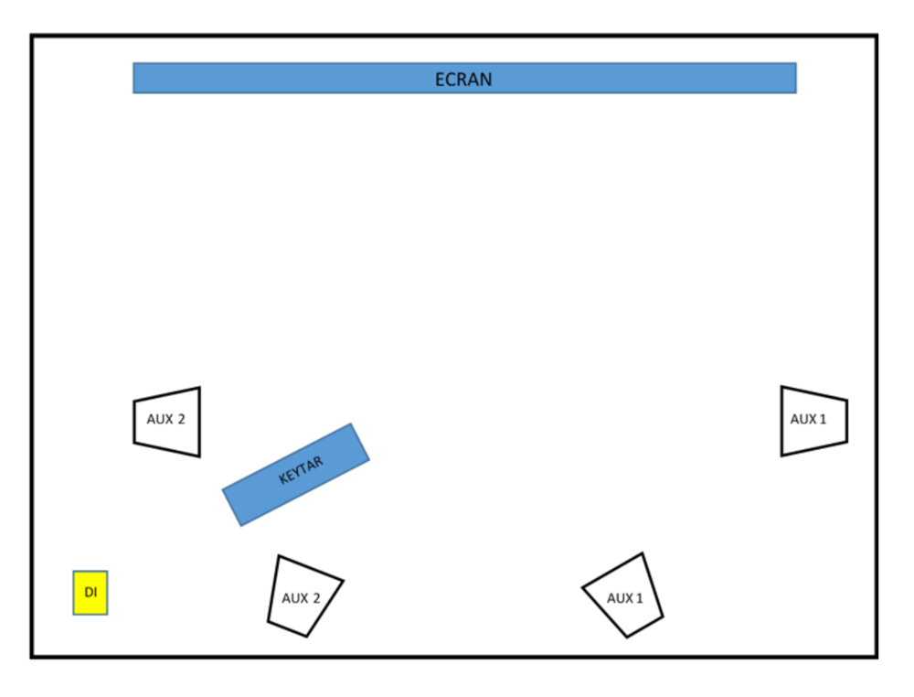
Les photos sans flash sont possibles pendant toute la représentation ; en cas de publication, merci d'envoyer les clichés à Lise pour validation. L'artiste garde un droit de regard sur tout enregistrement vidéo ou sonore, et aucune diffusion ne peut se faire sans son accord préalable.
Programmation et technique
Pour accueillir le spectacle, poser une question ou recevoir le fichier vidéo :
lisechemla@gmail.com06 72 53 36 84 · Vincennes, France
Écrire à Lise